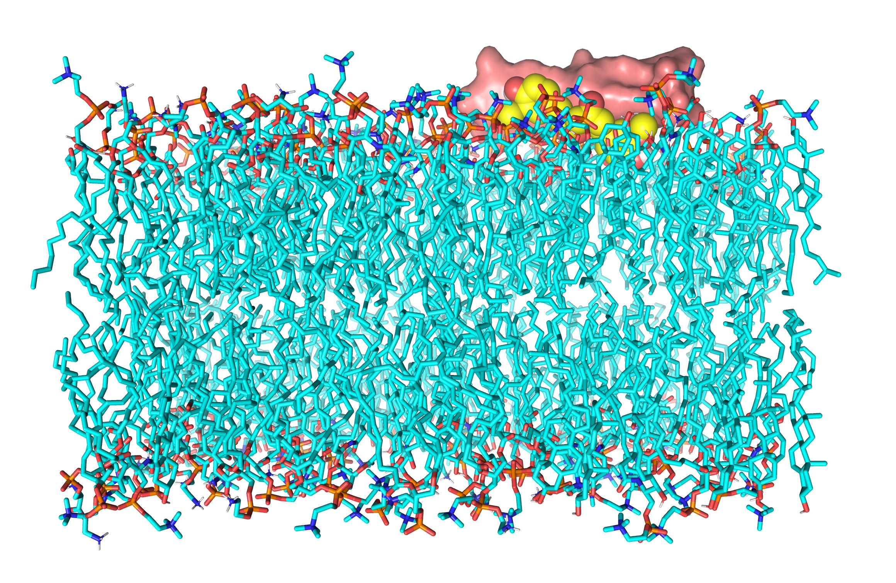
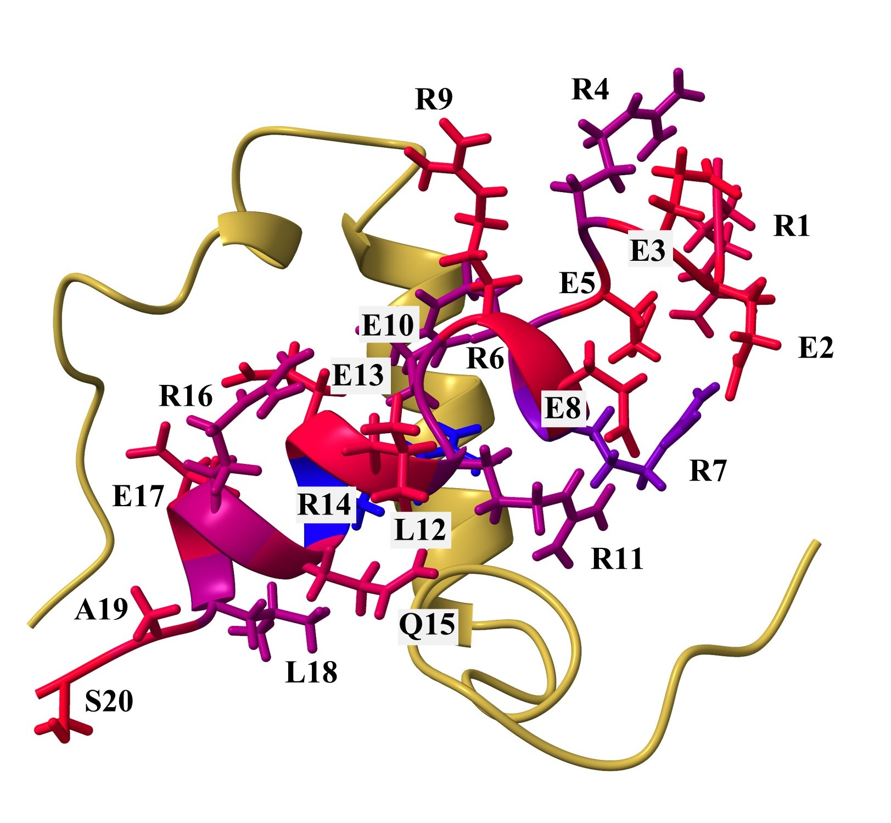
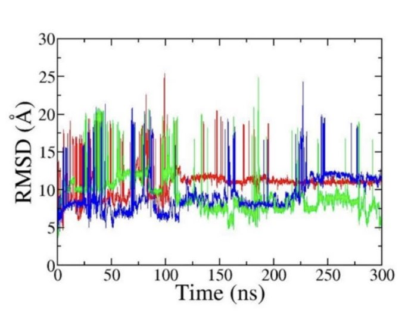
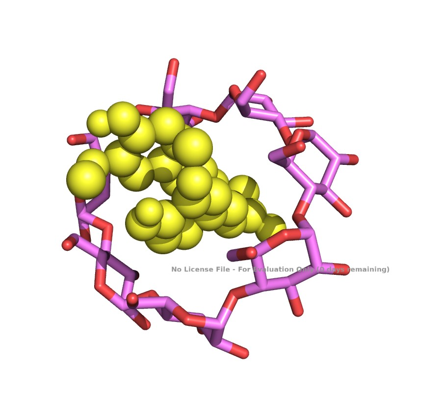
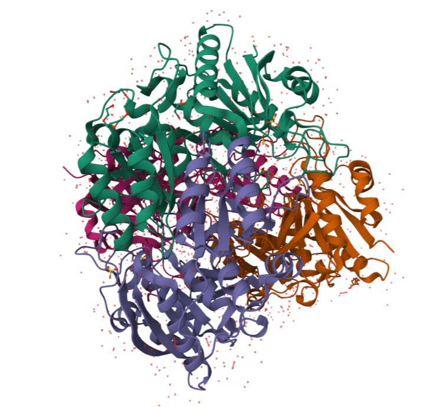
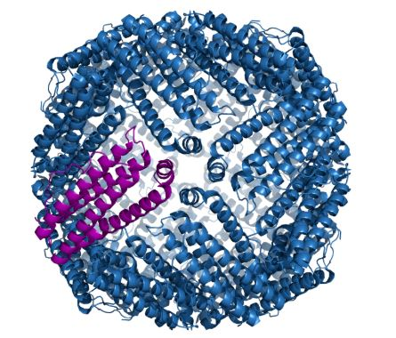
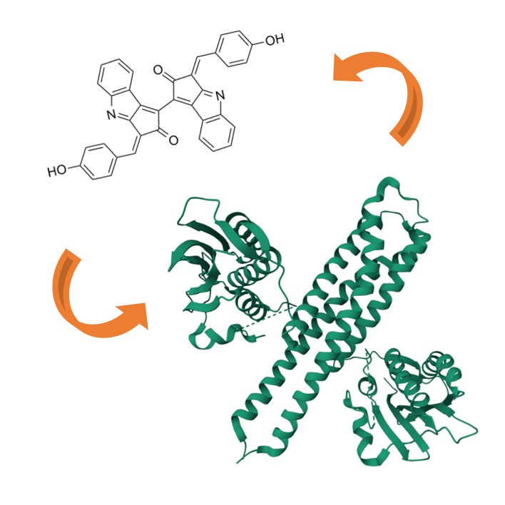
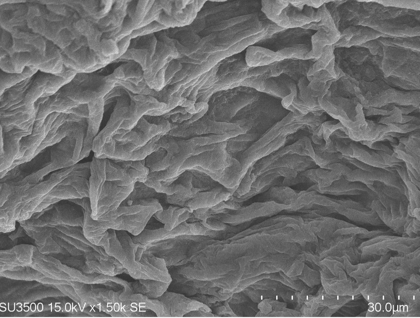

This study investigated how cellulose nanofibers (CNF) loaded with curcumin interact differently with healthy versus cancerous cell membranes, in the first all-atom MD study to model both membrane types side by side.

This study evaluated RFdiffusion-designed peptides as potential inhibitors of amyloid beta aggregation, comparing peptide–amyloid beta complexes against amyloid beta's natural self-aggregation behavior.
My contribution: I worked on part of the docking, ran the MD simulations, and carried out the analysis, including MM-GBSA, per-residue energy decomposition, RMSD, RMSF, and radius of gyration calculations.

This study compared cylindrical and planar cellulose nanofiber configurations to understand how nanofiber geometry affects drug loading and release behavior.
My contribution: I generated the MD simulation systems, ran the simulations, and carried out the analysis, including RMSD and distance analysis.
This study explored why naked mole rat amyloid beta is more resistant to aggregation than the human form, tracing the effect back to a single amino acid difference between the two species.
My contribution: I carried out the structure modeling and prediction using AlphaFold, contributed to the phylogenetic analysis, and helped interpret the results.

This project compares linear oligosaccharide and β-cyclodextrin nanocarriers, in native and surface-modified forms, loaded with drug molecules of limited bioavailability, and evaluates their interactions with cell membranes.
My contribution: I built the membrane systems, set up the MD simulation systems, and ran and analyzed the simulations for the drug–β-cyclodextrin–membrane complexes.

This project focuses on engineering a less immunogenic form of therapeutic asparaginase for acute lymphoblastic leukemia, combining HLA epitope prediction with molecular dynamics validation of the engineered enzyme.
My contribution: I ran MD simulations of the engineered asparaginase variants and performed the analysis, including MM-GBSA and per-residue energy decomposition.

This project examines how an Epstein–Barr virus antigen interacts with a ferritin nanoparticle carrier, combining molecular docking with molecular dynamics to characterize the antigen–carrier interface.
My contribution: I ran MD simulations of the ferritin–EBV antigen complex and performed the analysis, including MM-GBSA and per-residue energy decomposition.

This project investigates how the pigment scytonemin regulates a histidine kinase involved in bacterial UV-shield formation, proposing a molecular mechanism for this photoprotective response.
My contribution: I ran MD simulations of the histidine kinase and the scytonemin–histidine kinase complex.

This project explored decellularized plant tissue as a biomaterial scaffold for stem cell culture, characterized through SEM imaging, degradation testing, swelling ratio analysis, and contact angle measurements.
My contribution: I worked on developing and characterizing the decellularized plant scaffolds, analyzed SEM images using ImageJ, ran degradation, swelling, and contact angle assays, and gained hands-on experience with stem cell culture and in-vitro techniques.